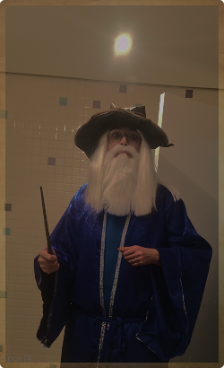

Henrique Schneider Fernandes da Rosa
Portais Arcanos
(Links)
-
Grimório Principal
(GitHub Pessoal):
https://github.com/SchneiderCode1 -
A Torre de Pesquisa
(Repositório do Laboratório Makers):
https://github.com/AI-Lab-UnB/maker_foudation26.2 -
Salão dos Mestres
(LinkedIn):
https://www.linkedin.com/in/henrique-schneider-565074227/
O Caminho do Mago: Trajetória, Código e Conhecimento
A tecnologia, em sua essência, é a arte de transmutar lógica em realidade. Minha jornada não é diferente da de um estudioso que busca decifrar os segredos profundos dos sistemas, unindo a base teórica rigorosa à aplicação prática de alta complexidade. Encaro a programação com a dedicação e o foco de quem estuda os fundamentos para dominar a própria "magia" do processamento de dados.